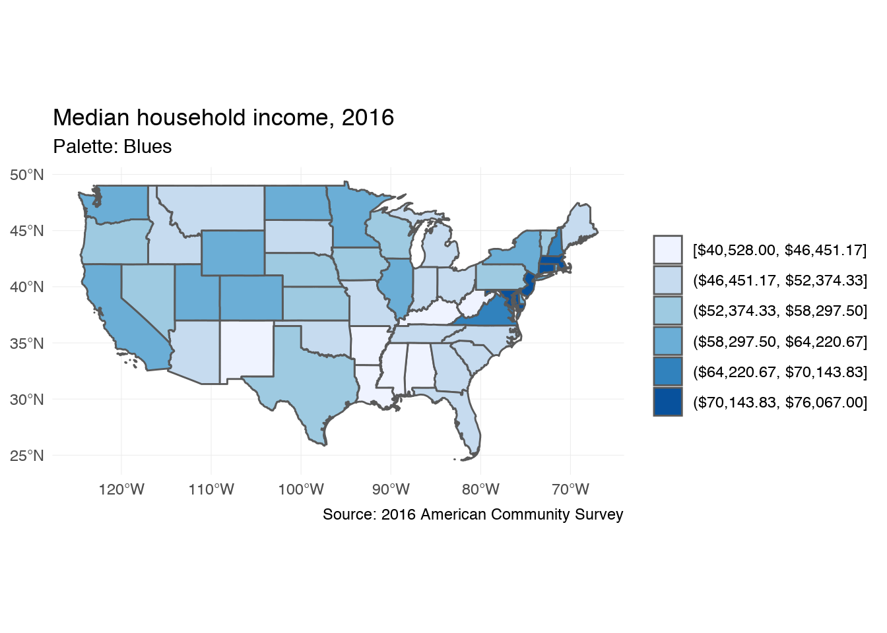
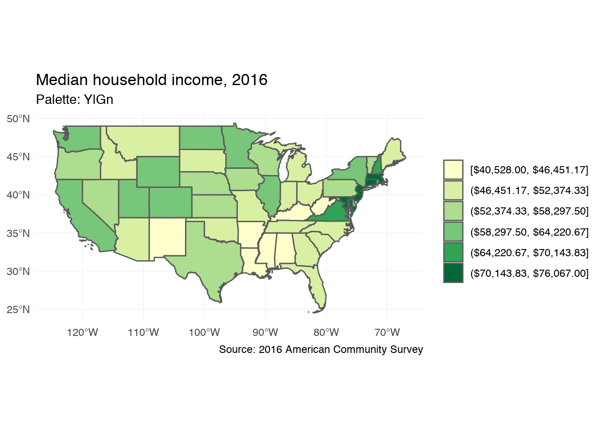
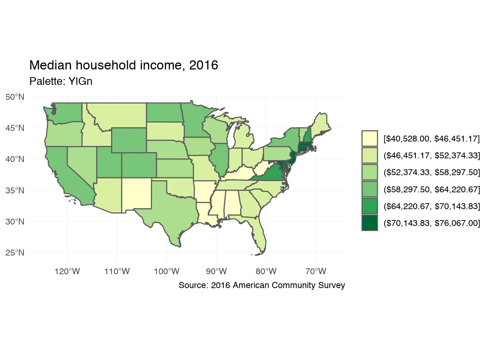
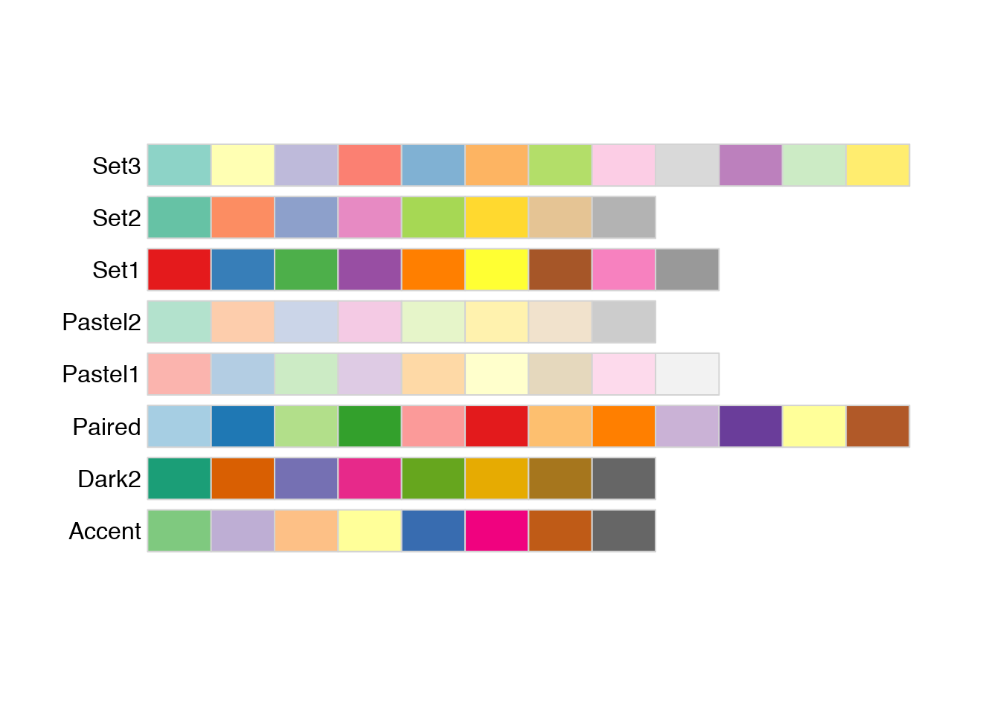
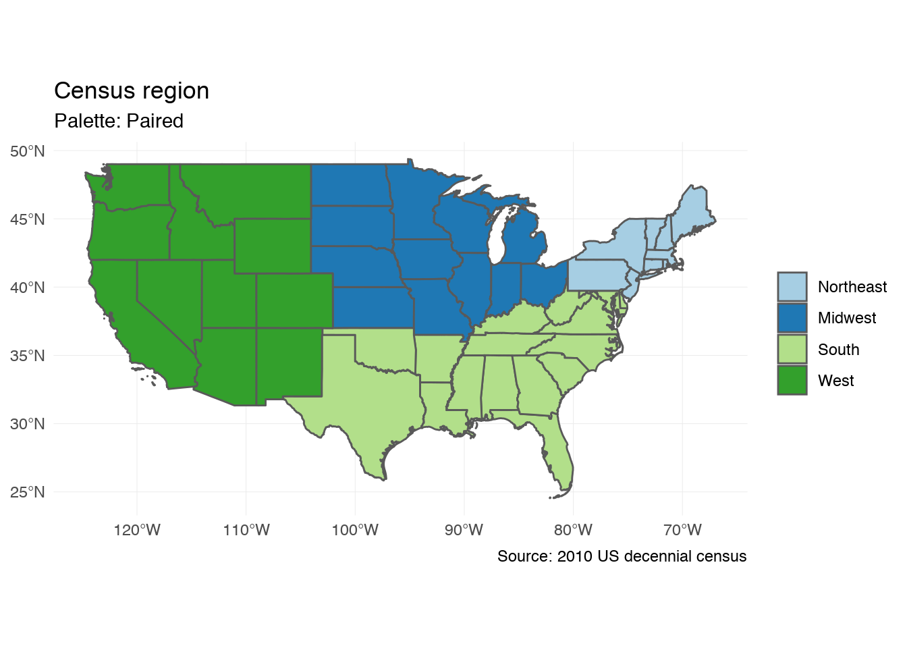
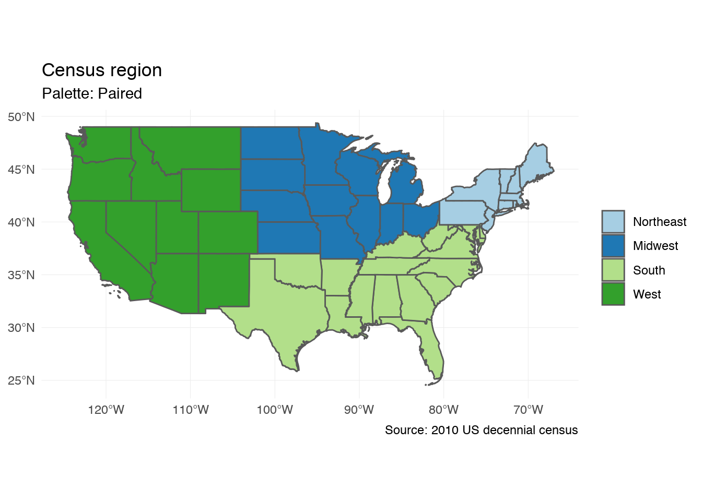
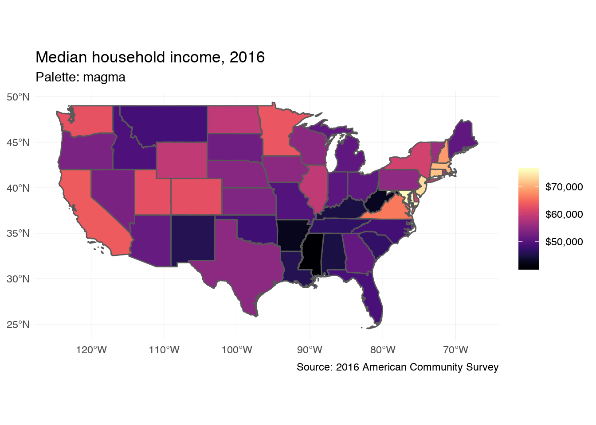

Selecting optimal color palettes
library(tidyverse)
library(sf)
library(tidycensus)
library(RColorBrewer)
library(gridExtra)
if(!identical(getOption("bitmapType"), "cairo") && isTRUE(capabilities()[["cairo"]])){
options(bitmapType = "cairo")
}
options(digits = 3)
set.seed(1234)
theme_set(theme_minimal())Select a color palette
Selection of your color palette is perhaps the most important decision to make when drawing a choropleth. By default, ggplot2 picks evenly spaced hues around the Hue-Chroma-Luminance (HCL) color space:1
# generate simulated data points
sim_points <- data_frame(x = factor(1:6))
plots <- purrr::map(1:6, ~ ggplot(sim_points[1:.x, ], aes(x, x, color = x)) +
geom_point(size = 5) +
ggtitle(paste(.x, "color")) +
theme(legend.position = "none"))
gridExtra::marrangeGrob(plots, nrow = 2, ncol = 3, top = NULL)
ggplot2 gives you many different ways of defining and customizing your scale_color_ and scale_fill_ palettes, but will not tell you if they are optimal for your specific usage in the graph.
Color Brewer
Color Brewer is a diagnostic tool for selecting optimal color palettes for maps with discrete variables. The authors have generated different color palettes designed to make differentiating between categories easy depending on the scaling of your variable. All you need to do is define the number of categories in the variable, the nature of your data (sequential, diverging, or qualitative), and a color scheme. There are also options to select palettes that are colorblind safe, print friendly, and photocopy safe. Depending on the combination of options, you may not find any color palette that matches your criteria. In such a case, consider reducing the number of data classes.
Sequential
Sequential palettes work best with ordered data that progresses from a low to high value.
display.brewer.all(type = "seq")
 

Diverging
Diverging palettes work for variables with meaningful mid-range values, as well as extreme low and high values.
display.brewer.all(type = "div")


Qualitative
Qualitative palettes are best used for nominal data where there is no inherent ordering to the categories.
display.brewer.all(type = "qual")
 

Viridis
The viridis package imports several color palettes for continuous variables from the matplotlib package in Python. These palettes have been tested to be colorful, perceptually uniform, robust to colorblindness, and pretty. To use these with ggplot2, use scale_color_viridis() and scale_fill_viridis():
library(viridis)
viridis_base <- ggplot(state_inc) +
geom_sf(aes(fill = estimate)) +
labs(title = "Median household income, 2016",
subtitle = "Palette: viridis",
caption = "Source: 2016 American Community Survey",
fill = NULL) +
scale_fill_viridis(labels = scales::dollar)
viridis_base
viridis_base +
scale_fill_viridis(option = "cividis", labels = scales::dollar) +
labs(subtitle = "Palette: cividis")
viridis_base +
scale_fill_viridis(option = "inferno", labels = scales::dollar) +
labs(subtitle = "Palette: inferno")
viridis_base +
scale_fill_viridis(option = "magma", labels = scales::dollar) +
labs(subtitle = "Palette: magma")
viridis_base +
scale_fill_viridis(option = "plasma", labels = scales::dollar) +
labs(subtitle = "Palette: plasma")
Session Info
devtools::session_info()## setting value
## version R version 3.5.0 (2018-04-23)
## system x86_64, darwin15.6.0
## ui X11
## language (EN)
## collate en_US.UTF-8
## tz America/Chicago
## date 2018-07-05
##
## package * version date source
## assertthat 0.2.0 2017-04-11 CRAN (R 3.5.0)
## backports 1.1.2 2017-12-13 CRAN (R 3.5.0)
## base * 3.5.0 2018-04-24 local
## bindr 0.1.1 2018-03-13 CRAN (R 3.5.0)
## bindrcpp 0.2.2 2018-03-29 CRAN (R 3.5.0)
## broom 0.4.4 2018-03-29 CRAN (R 3.5.0)
## cellranger 1.1.0 2016-07-27 CRAN (R 3.5.0)
## class 7.3-14 2015-08-30 CRAN (R 3.5.0)
## classInt 0.2-3 2018-04-16 CRAN (R 3.5.0)
## cli 1.0.0 2017-11-05 CRAN (R 3.5.0)
## colorspace 1.3-2 2016-12-14 CRAN (R 3.5.0)
## compiler 3.5.0 2018-04-24 local
## crayon 1.3.4 2017-09-16 CRAN (R 3.5.0)
## datasets * 3.5.0 2018-04-24 local
## DBI 1.0.0 2018-05-02 CRAN (R 3.5.0)
## devtools 1.13.5 2018-02-18 CRAN (R 3.5.0)
## digest 0.6.15 2018-01-28 CRAN (R 3.5.0)
## dplyr * 0.7.6 2018-06-29 cran (@0.7.6)
## e1071 1.6-8 2017-02-02 CRAN (R 3.5.0)
## evaluate 0.10.1 2017-06-24 CRAN (R 3.5.0)
## forcats * 0.3.0 2018-02-19 CRAN (R 3.5.0)
## foreign 0.8-70 2017-11-28 CRAN (R 3.5.0)
## ggplot2 * 2.2.1.9000 2018-07-02 Github (hadley/ggplot2@348b26f)
## glue 1.2.0 2017-10-29 CRAN (R 3.5.0)
## graphics * 3.5.0 2018-04-24 local
## grDevices * 3.5.0 2018-04-24 local
## grid 3.5.0 2018-04-24 local
## gridExtra * 2.3 2017-09-09 CRAN (R 3.5.0)
## gtable 0.2.0 2016-02-26 CRAN (R 3.5.0)
## haven 1.1.1 2018-01-18 CRAN (R 3.5.0)
## hms 0.4.2 2018-03-10 CRAN (R 3.5.0)
## htmltools 0.3.6 2017-04-28 CRAN (R 3.5.0)
## httr 1.3.1 2017-08-20 CRAN (R 3.5.0)
## jsonlite 1.5 2017-06-01 CRAN (R 3.5.0)
## knitr 1.20 2018-02-20 CRAN (R 3.5.0)
## lattice 0.20-35 2017-03-25 CRAN (R 3.5.0)
## lazyeval 0.2.1 2017-10-29 CRAN (R 3.5.0)
## lubridate 1.7.4 2018-04-11 CRAN (R 3.5.0)
## magrittr 1.5 2014-11-22 CRAN (R 3.5.0)
## maptools 0.9-2 2017-03-25 CRAN (R 3.5.0)
## memoise 1.1.0 2017-04-21 CRAN (R 3.5.0)
## methods * 3.5.0 2018-04-24 local
## mnormt 1.5-5 2016-10-15 CRAN (R 3.5.0)
## modelr 0.1.2 2018-05-11 CRAN (R 3.5.0)
## munsell 0.4.3 2016-02-13 CRAN (R 3.5.0)
## nlme 3.1-137 2018-04-07 CRAN (R 3.5.0)
## parallel 3.5.0 2018-04-24 local
## pillar 1.2.3 2018-05-25 CRAN (R 3.5.0)
## pkgconfig 2.0.1 2017-03-21 CRAN (R 3.5.0)
## plyr 1.8.4 2016-06-08 CRAN (R 3.5.0)
## psych 1.8.4 2018-05-06 CRAN (R 3.5.0)
## purrr * 0.2.5 2018-05-29 CRAN (R 3.5.0)
## R6 2.2.2 2017-06-17 CRAN (R 3.5.0)
## rappdirs 0.3.1 2016-03-28 CRAN (R 3.5.0)
## RColorBrewer * 1.1-2 2014-12-07 CRAN (R 3.5.0)
## Rcpp 0.12.17 2018-05-18 CRAN (R 3.5.0)
## readr * 1.1.1 2017-05-16 CRAN (R 3.5.0)
## readxl 1.1.0 2018-04-20 CRAN (R 3.5.0)
## reshape2 1.4.3 2017-12-11 CRAN (R 3.5.0)
## rgdal 1.3-1 2018-06-03 CRAN (R 3.5.0)
## rlang 0.2.1 2018-05-30 CRAN (R 3.5.0)
## rmarkdown 1.9 2018-03-01 CRAN (R 3.5.0)
## rprojroot 1.3-2 2018-01-03 CRAN (R 3.5.0)
## rstudioapi 0.7 2017-09-07 CRAN (R 3.5.0)
## rvest 0.3.2 2016-06-17 CRAN (R 3.5.0)
## scales 0.5.0 2017-08-24 CRAN (R 3.5.0)
## sf * 0.6-3 2018-05-17 CRAN (R 3.5.0)
## sp 1.3-1 2018-06-05 CRAN (R 3.5.0)
## spData 0.2.8.3 2018-03-25 CRAN (R 3.5.0)
## stats * 3.5.0 2018-04-24 local
## stringi 1.2.2 2018-05-02 CRAN (R 3.5.0)
## stringr * 1.3.1 2018-05-10 CRAN (R 3.5.0)
## tibble * 1.4.2 2018-01-22 CRAN (R 3.5.0)
## tidycensus * 0.4.6 2018-04-15 CRAN (R 3.5.0)
## tidyr * 0.8.1 2018-05-18 CRAN (R 3.5.0)
## tidyselect 0.2.4 2018-02-26 CRAN (R 3.5.0)
## tidyverse * 1.2.1 2017-11-14 CRAN (R 3.5.0)
## tigris 0.7 2018-04-14 CRAN (R 3.5.0)
## tools 3.5.0 2018-04-24 local
## udunits2 0.13 2016-11-17 CRAN (R 3.5.0)
## units 0.5-1 2018-01-08 CRAN (R 3.5.0)
## utils * 3.5.0 2018-04-24 local
## uuid 0.1-2 2015-07-28 CRAN (R 3.5.0)
## withr 2.1.2 2018-03-15 CRAN (R 3.5.0)
## xml2 1.2.0 2018-01-24 CRAN (R 3.5.0)
## yaml 2.1.19 2018-05-01 CRAN (R 3.5.0)Check out chapter 6.6.2 in
ggplot2: Elegant Graphics for Data Analysis for a much more thorough explanation of the theory behind this selection process↩
This work is licensed under the CC BY-NC 4.0 Creative Commons License.